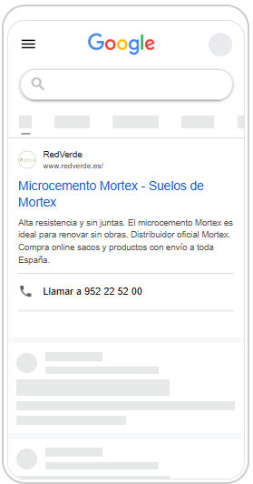

Publicidad en Google · Marca Mortex · Cierre de mes
Agosto cierra con 30 contactos reales a 6,46 € cada uno.
El segundo mes completo confirma la mejora: más visitas, más contactos y un coste por contacto muy inferior al de julio. Los contactos llegan por dos vías: el formulario de la web y el botón de WhatsApp. Además, desde septiembre la campaña se centra en Andalucía y Levante.
Agosto de un vistazo
2.470
veces que se mostró tu anuncio
300
personas entraron en la web
30
contactos reales (formulario + WhatsApp)
193,70 €
invertidos en el mes
Son 23 por el formulario y 7 por el WhatsApp de la web: 30 contactos en total, a 6,46 € de media. En julio, cada contacto costaba 37,72 €.
El salto de julio a agosto
La campaña ya no está aprendiendo: rinde. Estas son las cuatro cifras que mejor lo resumen, mes contra mes:
Julio
Agosto
Visitas a la web
142
300
Contactos por formulario
5
23
Coste por visita
1,33 €
0,65 €
La tabla compara la evolución del formulario mes a mes. Sumando los 7 contactos por WhatsApp, agosto cierra con 30 contactos por la campaña, a 6,46 € de media.
Contactos por formulario acumulados. A diferencia de julio (todos al final del mes), en agosto llegaron de forma constante desde el primer día — la campaña ya tiene un ritmo estable.
Así se ven tus anuncios en Google
Lo que ve una persona en su móvil cuando busca «mortex», «microcemento» o «mortero de cal». Google combina distintos titulares y muestra en cada búsqueda la versión que considera más eficaz.
Microcemento Mortex · Precio m² Con botón de llamada directa.Llamada
Comprar Mortex Online · Saco 25 kg Enfocado a la venta del producto.Llamada
Calcula tu Precio de Mortex Distribuidor oficial, envío a toda España.Llamada

Microcemento Mortex · Suelos «Renovar sin obras» como gancho.Llamada
Revestimiento Mortex Otra combinación de titulares que prueba Google.Variante
Micromortero Mortex Oficial Aquí aparece el botón de WhatsApp.WhatsApp
Mortex Precio por Saco Con enlaces extra a otras páginas de la web.Enlaces + Llamada
De dónde vienen los contactos
En agosto la campaña llegaba a toda España. Al mirar de qué provincia es cada contacto, se ve que la demanda está muy repartida — y que buena parte llega de fuera de tu zona de trabajo:
Andalucía + Levante
4
Madrid
5
Cataluña
4
Otras provincias
3
Reparto sobre los 16 contactos con provincia registrada (los 7 de principios de mes no la tienen: el campo se añadió al formulario a mitad de agosto). Solo 4 de esos 16 son de Andalucía y Levante; el resto, sobre todo de Madrid y Cataluña.
Desde septiembre, la campaña se centra en Andalucía y Levante.
Es la decisión que has tomado y los datos la respaldan: gran parte del presupuesto de agosto se iba en contactos fuera de tu zona de actuación. Al concentrar la campaña en Andalucía y Levante, cada euro se destina a contactos que sí puedes atender. Probablemente baje el número total de contactos respecto a agosto, pero todos serán de tu zona.
El recorrido: de una búsqueda a un contacto
Así se estrecha el «embudo» de la campaña. Estos son los números reales de agosto:
2.470
veces que apareció el anuncio
↓ 12 de cada 100 hacen clic y entran en la web
300
visitas a la web
↓ 10 de cada 100 visitas contactan (formulario o WhatsApp)
30
contactos reales
El 10 % de las visitas acaba contactando —23 por el formulario y 7 por WhatsApp—: no solo llega más gente, sino que una proporción mayor deja sus datos.
Cómo contamos los contactos
Cruzamos las conversiones de Google con los envíos reales del formulario. Google contabilizaba de más en el formulario; el dato real, verificado uno a uno, es menor:
Contaba Google
Reales
Contactos de formulario
28
23
A los 23 del formulario se suman 7 contactos por el botón de WhatsApp de la web, también generados por la campaña. En total: 30 contactos reales en agosto.
Quiénes son esos contactos
Del detalle disponible —los 23 contactos del formulario— este es el perfil. Todos con un proyecto concreto detrás:
9
profesionales (reformas y aplicadores)
14
particulares con obra en marcha
23
con proyecto concreto
Entre sus consultas: revestimiento de baños y duchas, suelos de vivienda, cocinas y encimeras, fachadas y exteriores, una piscina y el porche de un hotel. Varios profesionales son empresas de reformas o aplicadores de microcemento — perfil con potencial de compra recurrente.
Previsión para septiembre
Septiembre es un mes de transición: la campaña pasa de toda España a centrarse en Andalucía y Levante. Google necesita una a dos semanas para adaptarse a la nueva zona, así que la previsión es prudente.
26 %
cuota de búsquedas en agosto (subirá al concentrar en zona)
~10
contactos previstos, todos en zona
Andalucía + Levante
zona objetivo de la campaña
~194 €
mismo presupuesto que agosto
100 %
contactos dentro de tu zona
Serán menos contactos que en agosto (que llegaba a todo el país), pero todos de Andalucía y Levante. Al no repartirse por toda España, el presupuesto rinde más dentro de tu zona. Lo confirmaremos con los datos de septiembre.
Qué hacemos ahora
01
Centrar en Andalucía y Levante
La campaña ya no se muestra en toda España, sino solo en tu zona de actuación. Todo el presupuesto se destina a contactos que puedes atender.
02
Rendir más con el mismo presupuesto
Con la campaña concentrada, afinamos anuncios y pujas para ganar presencia dentro de la zona sin incrementar el gasto.
03
Ajustar el seguimiento
Seguimos corrigiendo la configuración de conversiones para que Google cuente solo los contactos reales y los informes cuadren solos.
Próxima revisión: primeros de octubre, con septiembre completo y el nuevo enfoque geográfico ya rodado.